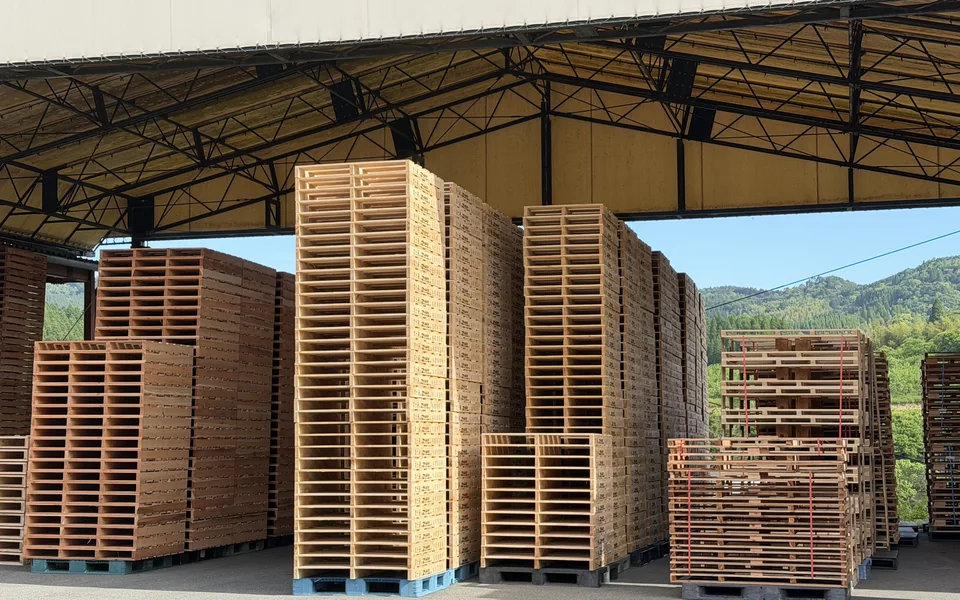
01
木製パレット製造
国産杉材、ニュージーランド松、LVLなどを使用し、各種木製パレットを製造しています。用途に応じたハイブリッドパレットの製造や、輸出向けの燻蒸処理にも対応可能です。
WOOD DIVISION
1950年の創業以来、木とともに歩んできました。
原木の調達から製材、組立まで —— すべて自社で。
木製パレット・木箱・梱包材の
製造・販売から、梱包作業請負まで。
フォレストの木材事業部は、創業から75年にわたり熊本・山鹿で木を扱ってきました。国産杉材をはじめ、ニュージーランド松やLVLなど用途に応じた材料を使い分け、お客様の貨物に合わせた一品一様のものづくりに対応しています。
原木の調達から製材、組立までを自社で一貫して行えることが、短納期と柔軟なご提案を支えています。
PRODUCTS

国産杉材、ニュージーランド松、LVLなどを使用し、各種木製パレットを製造しています。用途に応じたハイブリッドパレットの製造や、輸出向けの燻蒸処理にも対応可能です。
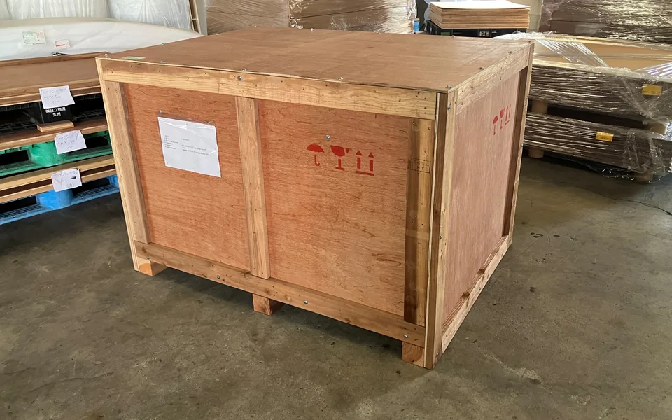
お客様の貨物・仕様に合わせて木箱を設計・製造しています。輸送中の破損リスクを抑え、大切な貨物をしっかり保護します。精密機器や大型機械など、一品物にも対応します。
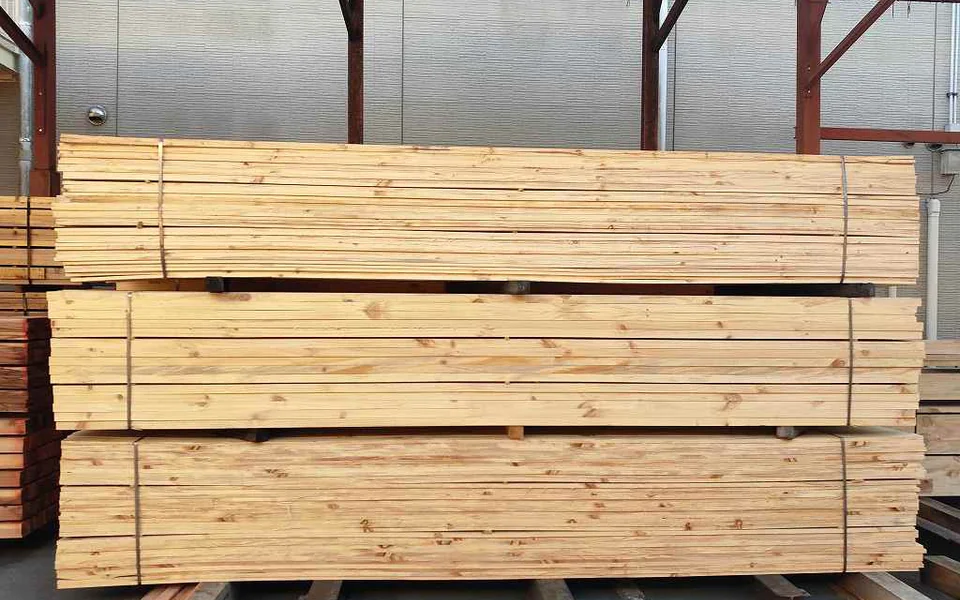
自社で製材した角材を中心に、各種梱包材を製造しています。用途に応じた寸法へ加工し、梱包業者様向けの出荷にも対応。現場での梱包作業そのものを請け負うことも可能です。
OUR STRENGTH
原木調達から製材・組立まで自社で一貫対応することで、
短納期かつ柔軟なご提案が可能です。
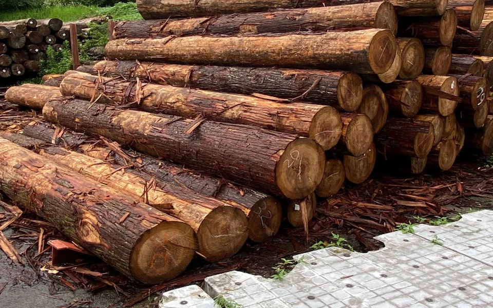
STEP 01
国産杉材を中心に、ニュージーランド松などの輸入材も取り扱っています。安定した調達ルートを確保しています。
素材丸太
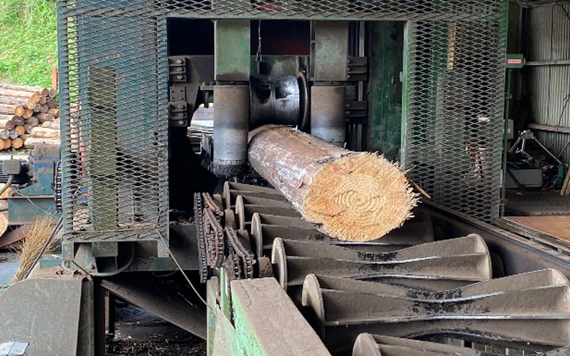
STEP 02
丸太の皮を剥き、用途に応じた長さへカット。リングバーカー等を用いて、一本一本丁寧に仕上げます。
加工丸太角材・板材
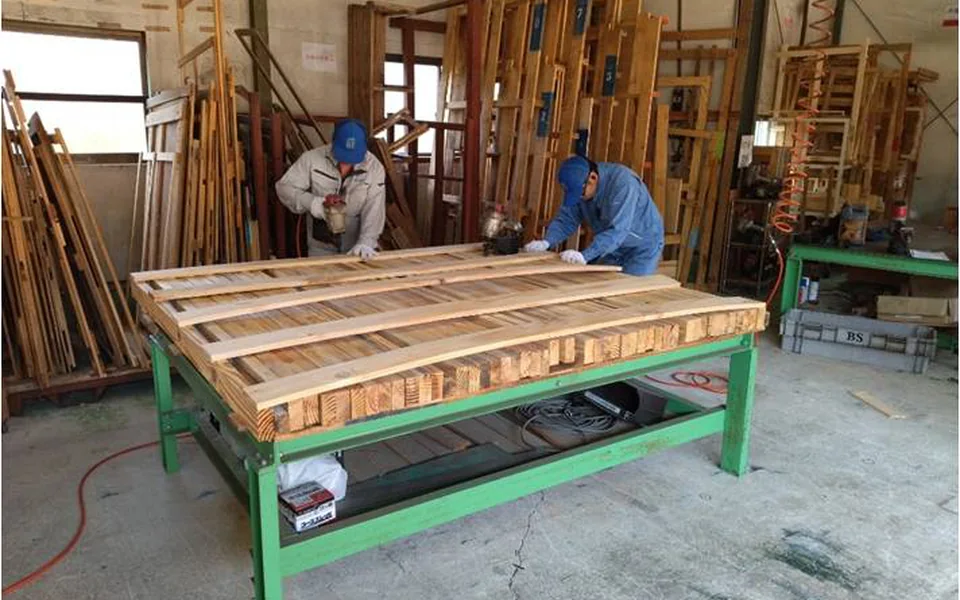
STEP 03
自動釘打ち機と職人の手作業を組み合わせ、パレット・木箱を組み上げます。お客様の仕様に合わせた一品一様の製作に対応します。
完成角材パレット・木箱
ONE-STOP
木材事業部は、フォレストの総合物流サービスの起点です。つくるだけでなく、資材の調達から保管・梱包・輸送までを一つの窓口でご相談いただけます。
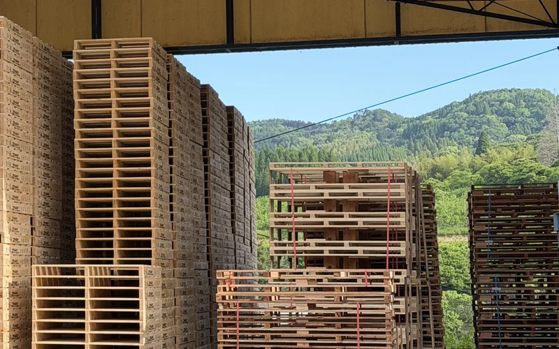
この事業部木材パレット・梱包材・木箱などの製造
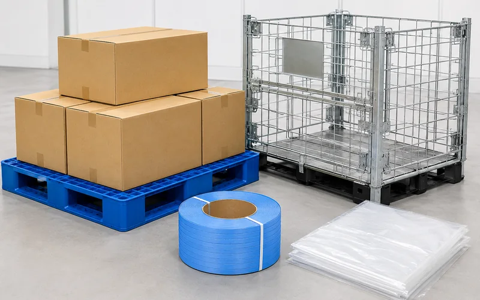
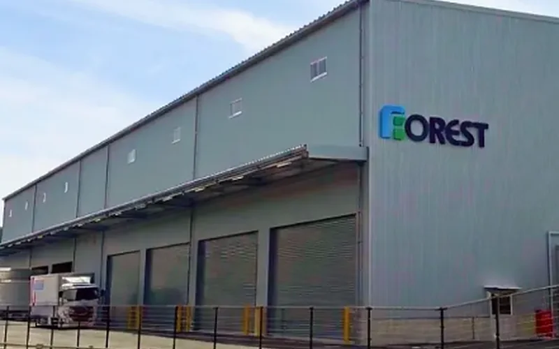
営業倉庫の保有・運営
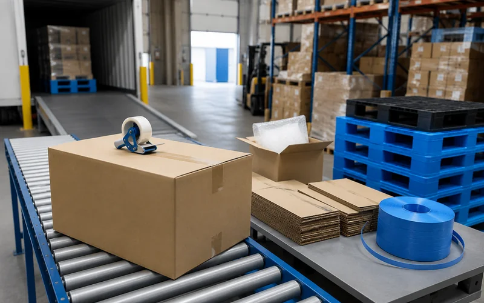
梱包作業から在庫管理までワンストップ
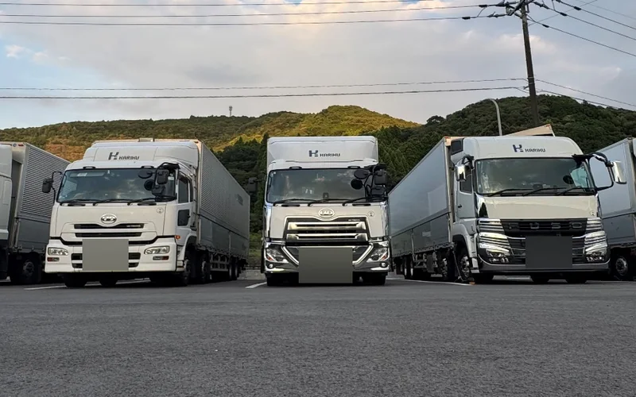
子会社カリクによる九州・中国地方への配送
各事業の詳細は事業紹介をご覧ください。